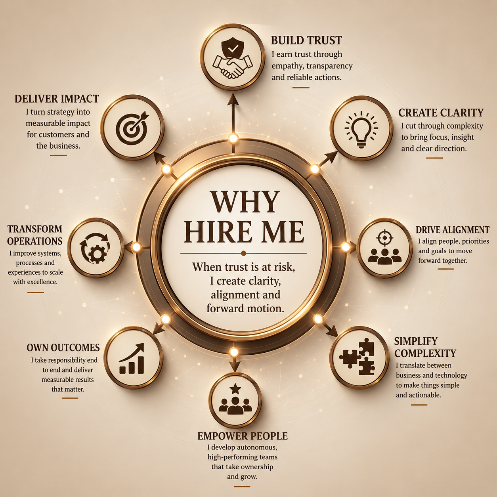

Technology Exists to Enable Outcomes
Technology is a means to an end. Success comes from aligning technology, people and processes to deliver meaningful business results.
About
I am a global customer support and operations leader with more than 20 years of experience across SaaS, cloud, AI/ML platforms, healthcare and financial services.
I have built my career helping customers, engineers and business leaders find common ground and move forward together.
Technology is a means to an end. Success comes from aligning technology, people and processes to deliver meaningful business results.
People perform at their best when they feel trusted, supported and empowered. Strong teams create better customer experiences.
Customers remember how you respond when things go wrong. Transparency, ownership and trust often matter more than the problem itself.
Focus on solving problems rather than assigning blame. Every challenge should improve the way the organisation operates.
Great organisations scale through clear ownership, shared knowledge and repeatable processes—not individual heroics.
The best leaders develop people who can succeed independently. Leadership is measured by the capability and confidence created in others.

“When communication has broken down or customer trust is at risk, I bring people together, simplify complexity and create a practical way forward.”
“Pankhuri creates an environment where people feel fully supported while being challenged to grow. She combines empathy, accountability and a genuine commitment to her team’s success.”Trusted leader · Themes from recommendations by direct reports and colleagues
“She has a unique ability to understand both the customer and the business perspective. During difficult situations, she builds trust quickly and helps everyone align around a solution.”Customer advocate · Themes from customer-facing peers and stakeholders
“Pankhuri combines strong technical expertise with the ability to explain complex issues in business terms. She is a trusted partner to customers, Product, Engineering and leadership.”Technical and business translator · Themes from cross-functional partners
“She does not just manage people—she develops them. She empowers teams to become self-sufficient and creates an environment where people can thrive.”People developer · Themes from direct reports and colleagues
Before publishing: replace the thematic attribution lines above with named recommendations and titles where you have permission.